Nothing accumulates
Each repository answers questions about itself and nothing else. There is no object anywhere in the stack that represents "everything I own", so the PM has to be that object, by hand, weekly.

Case study · 2026 · Product design & data infrastructure
In brief
A product manager running four products holds four repositories, four branch trees, four schemas and four sets of vendors — and no single place that says how any of it connects. This is the layer above the repos: every page, module, endpoint, job, table and external service on one canvas, with branch, schema version, ownership, commit activity and reachable personal data painted onto the same nodes.
01 — What we're designing
Schema & Lineage is one tab inside a platform console. It crawls every repository a team owns and rebuilds each product as a graph: the pages it serves, the modules those pages import, the endpoints they call, the scheduled jobs nobody remembers, the tables and caches underneath, and the external services on the far side. Then it draws the whole thing.
Everything on the canvas is a real object with a real address — a route, a file and line number, a table, a column, a vendor SDK — and every line between two of them is a specific relationship: an HTTP call, an import, a read, a write, a foreign key, a cache lookup, a call out to somebody else's API.
02 — The problem
The user here is not an engineer inside one codebase. It is the product manager who owns several products at once — often across different GitHub accounts, each with its own repositories, branches, release tags, contributors, database and set of integrations.
Every individual fact that PM needs already exists somewhere. What
version is this on. Which branch is ahead. Who last touched checkout.
What breaks if orders.status changes. Which service still
calls the payment vendor. The facts exist — they are just spread
across four repositories, four commit histories, four schema files,
a CODEOWNERS file, an issue tracker and somebody's memory.
Each repository answers questions about itself and nothing else. There is no object anywhere in the stack that represents "everything I own", so the PM has to be that object, by hand, weekly.
How a screen reaches a table is a chain of four or five hops that nobody has written down. It is reconstructed in a call, forgotten, and reconstructed again the next time it matters.
A schema edit is a diff in a pull request. What it touches — endpoints, jobs, screens, a downstream vendor — is exactly the part the diff does not show.
Ownership, activity, in-flight work and data sensitivity are all properties of the same nodes. Answering them separately means four tools and four mental models of the same graph.
03 — Why the existing tools weren't enough
This is worth stating plainly, because it decided the whole shape of the product: nothing here is a complaint about GitHub. Inside a single repository, GitHub is excellent — history, blame, branches, review, ownership. The problem is that a repository is the unit it reasons about, and the PM's unit is the portfolio.
So the gap is not a missing feature in any one tool. It is a missing layer — one that reads all of those systems, joins them on the objects they share, and renders the result as something a person can point at.
04 — The approach
The design rests on one modelling decision. Every project is normalised into the same five layers — frontend, modules, backend, database, integrations — regardless of what it is built with. ShopStack is Next.js and Drizzle, Ledger is Remix and Kysely, Atlas is Astro on SQLite; on the canvas they are the same five rings with the same seven kinds of connection between them.
That is what makes the portfolio view possible at all. Four products become comparable because they are described in one vocabulary, and the PM learns to read one picture instead of four.
main, staging, feature/discounts, v2.4.0, v2.3.0, v2.2.0 — the map is always the map at a ref, and switching one redraws it.Keeping the lenses on one layout is the load-bearing part. A PM who has learned where checkout sits does not have to re-learn it to ask who owns it — the node stays exactly where it was and simply starts saying Payments instead of 4 open PRs.
05 — Key design decisions
Most of the work was not drawing the graph. It was deciding what to do when the graph is bigger than the screen, when the data is only partly trustworthy, and when the thing a PM needs is a number rather than a picture.
A collapsed layer is the default, because 61 nodes at once is unreadable. But hiding a node must never hide its connections — every edge inside a collapsed layer is bundled onto the layer itself and still drawn. The footer counts them out loud: 94 links drawn, 72 bundled, 30 inside collapsed layers. Nothing disappears quietly.
Crawled structure is exact. Read and write counts are inferred from statically resolvable call sites. PII flags are heuristics from column names. Sample values are generated, never real. The panel grades all of it — exact, high confidence, synthetic, heuristic, off — because a PM acting on a number needs to know how much weight it holds.
Schema history is a line you drag along, each stop carrying its own diff summary — +1 table, +4 columns, 3 changed, +1 index — with the commit and author attached. History reads as motion in one direction rather than as a list of names.
Orphans, cycles, hotspots, risk, coverage and unused columns are computed from the same graph the canvas draws, and selecting one highlights it in place. There is no separate audit screen to drift out of date, because there is no second copy of the data.
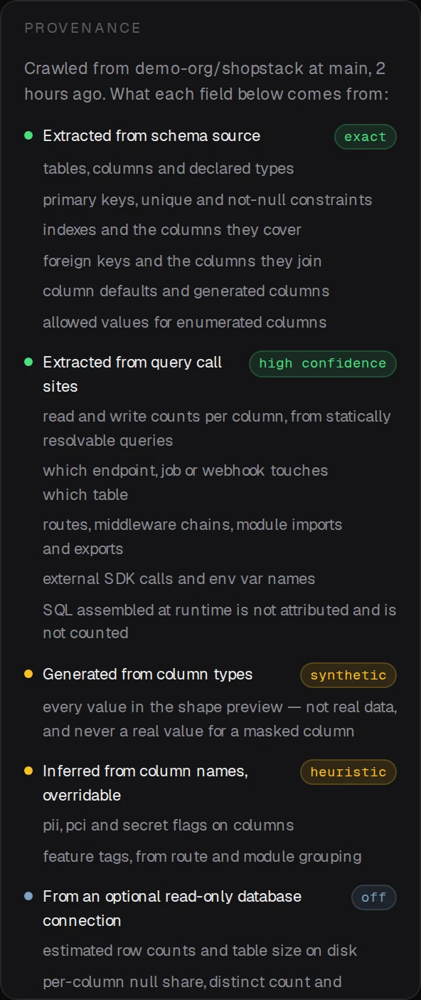
06 — Major components
What follows is each of the load-bearing components on its own, in the order a product manager meets them — portfolio, layers, map, readings, inspector, schema history, comparison, findings. Breadcrumbs, zoom controls and search are left out; they are plumbing, not the argument.
None of these is a drawing. Every specimen is the real component, lifted straight out of the running build and framed by itself, so nothing on this page can quietly disagree with the product. Hover one to make it live — open a layer, switch a lens, drag the schema history, or try to find a table nobody reads.
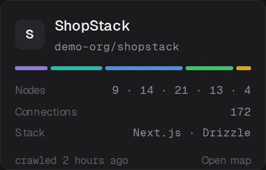
01Project cardLive
The unit the PM actually owns. One card per product, all four described identically: the five-layer bar in the layer colours, node counts per layer, total connections, stack, and how long ago it was crawled. The freshness line matters more than it looks — a map nobody can date is a map nobody trusts.
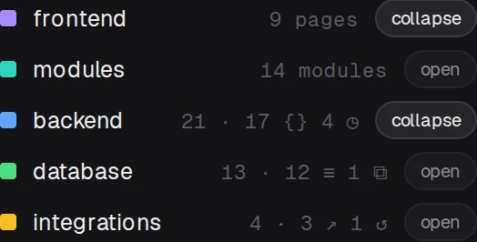
02Layer listLive
Five rows, and the only navigation the map needs. Each layer states what it holds before you open it — 9 pages, 14 modules, 17 endpoints and 4 scheduled jobs, 12 tables and a cache — so unfolding is a decision rather than an experiment. The colour swatch here is the same colour that node wears everywhere else in the product.
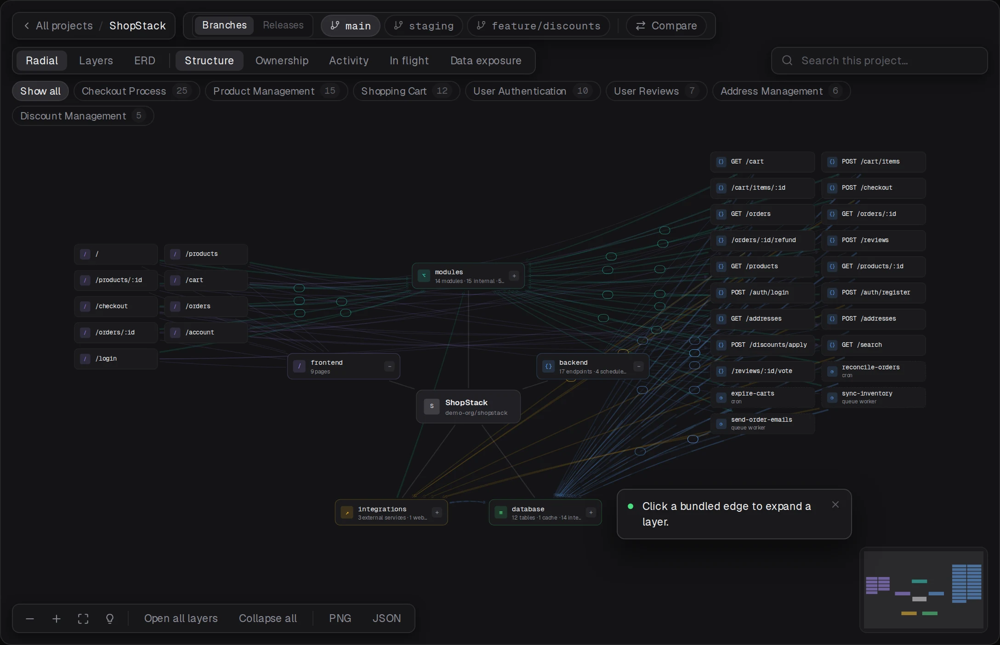
03Radial connection mapLive
The project at the centre, its layers around it, nothing hidden. Unfold a layer and its contents spread in place while every connection stays on screen — edges into a collapsed layer bundle onto the layer node rather than vanishing. Line colour carries the relationship type and the ribbon's width carries how many connections are bundled inside it.
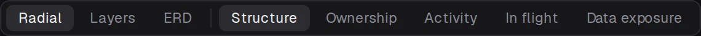
04Layout & lens switcherLive
Three readings on the left, five lenses on the right, one divider between them. The split is the whole idea: layout changes where things are, lens changes what they say. Ownership paints the CODEOWNERS team, Activity paints 90-day commit heat, In flight paints open pull requests, Data exposure paints what personal or payment data each node can reach.
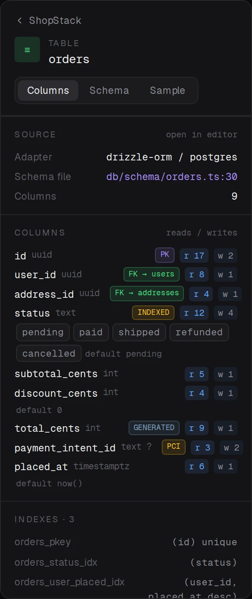
05Node inspectorLive
Everything known about one object, addressed to the file it came from. Adapter and schema file with a line number, every column with its type, keys, enum values, defaults and a per-column read/write count, then indexes, foreign keys both ways, and which endpoints and jobs touch it. Selecting a node also lights its blast radius on the canvas behind — the panel answers what is this, the canvas answers what does it reach.
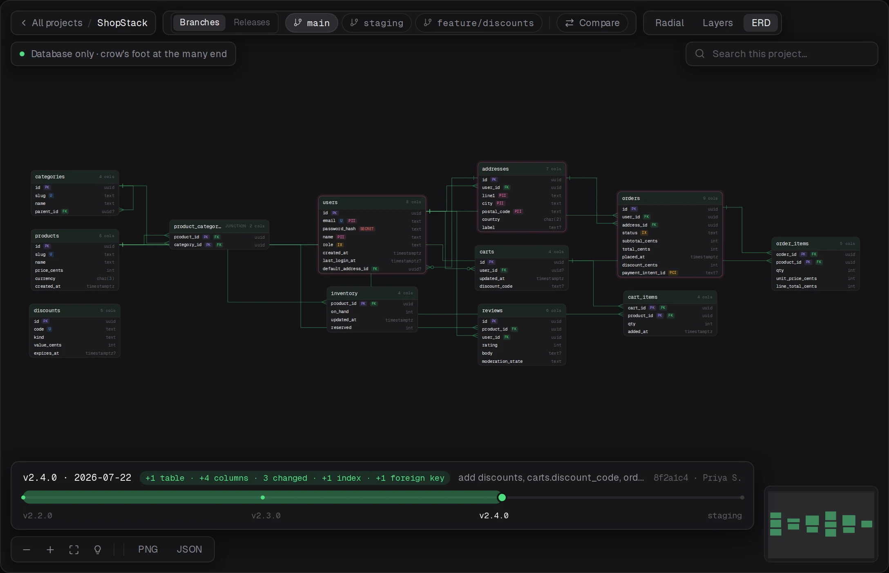
06ERD & schema version scrubberLive
The database on its own, at a version you can drag to. Crow's foot at the many end, junction tables marked as junctions, sensitive columns flagged in place. The scrubber underneath runs v2.2.0 to staging; every stop carries its own diff summary and the commit and author behind it, so "when did this table appear" is a drag rather than an investigation.
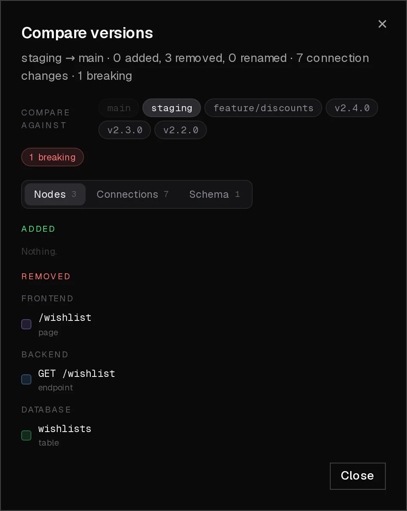
07Compare versionsLive
Any two refs, and the word breaking earned rather than asserted. The headline counts nodes, connections and schema changes in one line; the tabs split them; and severity is computed — a widened type is safe, a narrowed one is breaking, a dropped not-null column is breaking whoever wrote it. This is the component that turns "we merged staging" into a sentence a PM can act on.
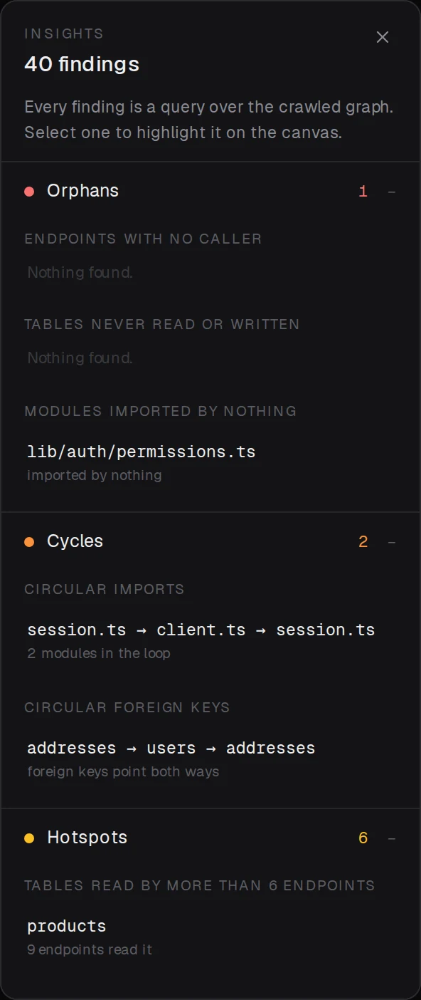
08InsightsLive
Forty findings, every one of them a query over the map. Orphans, cycles, hotspots, risk, coverage and unused — a table nothing reads, two modules importing each other, a vendor one hop from checkout, a write with no auth in its middleware chain. Selecting a finding opens the layers it lives in and highlights it on the canvas, so a list item and a place on the map are the same act.
07 — The final product
The components above, assembled. Not a prototype video and not a screen recording — the front end itself, at full width. It opens on the portfolio: four products, 138 nodes and 311 connections, each card describing its product in the same five terms as the others. That screen is the thing that did not exist before.
Open one and the same graph is available three ways and five ways at
once. The route worth walking is the one a PM actually walks: open the
database layer, click orders, read which endpoints and
jobs touch it, drag the schema history back two versions to see when
discount_cents arrived, then compare staging against main
and find the one breaking change in it.

Runs entirely in your browser against fixture data; nothing here talks to a server. Built for a desktop viewport — open it full screen on a phone.
The two plates below are the lenses doing the work the original problem asked for: who owns what, and what can reach the sensitive data. Same layout, same nodes, same positions — only the paint changes.
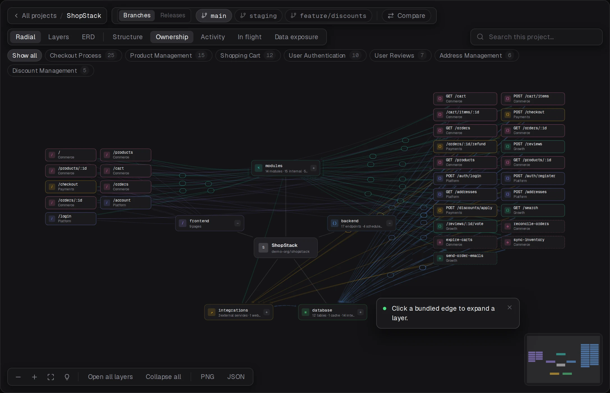
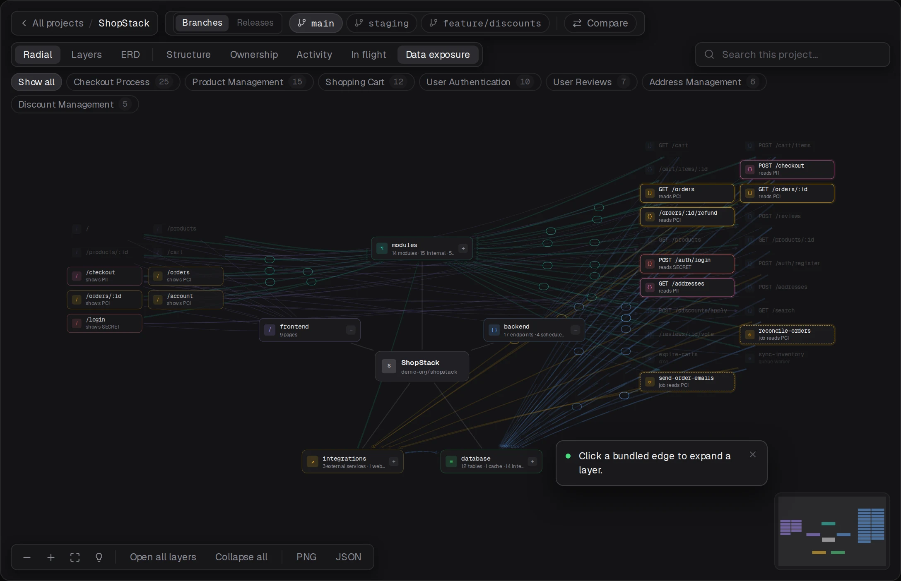
/login shows SECRET,
/checkout shows PII, and a scheduled job nobody thinks
about reads PCI.
08 — Impact & takeaway
The move the whole case study makes is one step of altitude: from project-level information to product-level visibility. Nothing here replaces a repository, a schema file or a pull request. It reads all of them, joins them on the objects they share, and gives the person accountable for four products the one thing none of those systems was ever built to produce — a single picture of everything they own, dated, sourced, and specific enough to act on.
4→1
Separate repositories, read as one portfolio
5
Layers, one vocabulary for every stack
3×5
Readings and lenses over a single layout
311
Connections drawn — none of them hidden
The design lesson I would carry to the next one is that the switch has to be cheaper than the picture. Every time a question got its own screen, the PM lost their place; every time it became a lens over the layout they already knew, they kept it. Three layouts and five lenses is a large surface, but it is one map — and it is only one map because the switching was designed before the drawing was.
About what's shown here. The build runs against fixture data: the organisation, the four products and the people in the commit history are invented, and the sample rows in the inspector are generated from column types rather than read from a database. The structure is the real thing — real routes, real middleware chains, real foreign keys, real vendor SDKs — because the design only holds up if the graph behaves like one an engineer would recognise. Still open: the heuristic layer. PII flags inferred from column names and feature tags inferred from route grouping are the two places the map can be confidently wrong, and the thing I want to test is whether marking them heuristic, overridable is enough — or whether a wrong label read once is trusted forever.